毫无疑问，数字1最简单的写法是这样的：1。但你可能也会了解到这样的事实，即无限重复小数0.9999是这一数字的另一种写法。在这一章中我们会仔细研究它。
十进制系统非常方便，大部分时间都运行得非常好。对整数来说，系统是准确的。235这个记数法是——两个100、三个10和五个1的简写，或者以数学符号表示为：
235=2×100+3×10+5×1
对于一些分数来说，十进制记数法是完全有效的。想一下
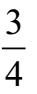
，在十进制记数法中，它也可以写成0.75。0.75的含义是：
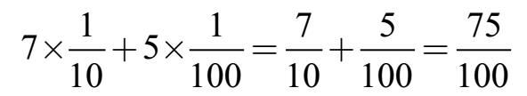
小数0.75准确地等于
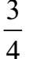
。对于在0和1之间的小数用0打头是一个好的做法，尽管可能是多余的，但0能使我们留意到小数点。如果我们看到一个朴素的.75，可能会错过那个点。
但是，当我们用十进制记数法写
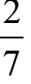
时，事情则变得很糟糕。如果我们把2÷7输入计算器，会得到一个令人不愉快的0.28571429，这只是一个近似值，它并不完全等于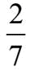
。像
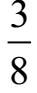
这样的数字可以精确地写成小数，因为我们可以将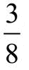
重写为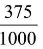
，分母是10的幂。但是在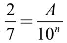
中，我们找不到一个整数A，因为那意味着2×10n=7×A。没有整数A可以满足这个公式，因为不管你选择什么样的整数A，左边都不能被7整除而右边却可以。想要精确地表示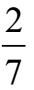
是不可能的。除非……对于数学家来说，一个有无限多数字的十进制数有一个微妙的含义，本章的要点就是理解这点。我们回到本章的要点：0.999999…的含义是什么，以及为什么它等于1？
在一开始，不要将0.999999…视为一个单一的数字，让我们把它看作是一个数字序列，在这个数字序列中，我们每一个数字都追加一个9，顺序是这样的：
0.9 0.99 0.999 0.9999… (*)
直到永无穷尽（ad infinitum）。注意该序列的项会逐渐变大。不会大太多，但每一个项都比之前的更大。
我们将要证明两个事实：
1.递增序列（*）中的所有项都小于1。
2.如果x是小于1的任何数，那么序列（*）在某一项之后的所有项都将大于x。
要明白这两点，我们用分数形式重写这个序列，如下所示：
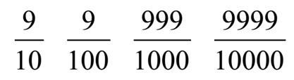
有一个更简洁的方法来重写这些分数。注意分母只是10的幂：101，102，103，等等。每个分子只比分母小1。所以，同样的序列可以这样重写：
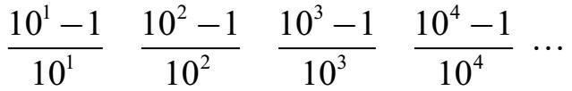
用这种方式写出来，很容易看出序列（*）的第n项是：
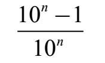
通过这种方式来看这些项，显然序列（*）的每一项都小于1，因为每一个分子都小于它的分母。
现在我们展示第二点：如果x是小于1的任何数，序列（*）中的项最终会超过x。
由于x小于1，我们知道1–x是正的。如果x恰好接近1，那么1–x很小，但仍然是正的。让我们将1–x乘以10的幂：
10n ×（1–x）
由于1–x是正数，如果10n足够大，其结果将大于1：
10n ×（1–x）＞1
展开左侧：
10n–10nx＞1
将1移到左边，将10nx移到右边：
10n–1＞10nx
两边除以10n得到：
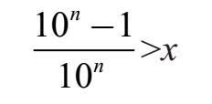
让我们回顾一下我们所知道的。一方面，不断增加的序列中的数字0.9，0.99，0.999等都小于1。另一方面，如果x是小于1的任何数，那么这个序列最终会大于x（并且越来越大，离x越来越远）。
这个序列不可阻挡地越来越接近1。我们说序列收敛至1，或者，我们说序列的极限是1。
十进制的有限位小数的含义，如0.529，是若干个十分之一、若干个百分之一、若干个千分之一等的总和，如下所示：
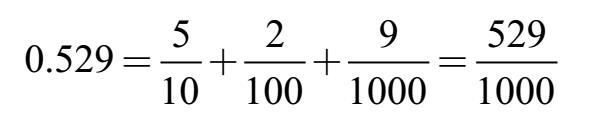
不幸的是，十进制的有限位小数的语言不够丰富，不足以表示如
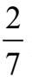
这样的数字。所以我们需要丰富我们的词汇。十进制的无限位小数的值是每一次追加一位数形成的序列的极限值。这个要复杂得多，但是我们能够用小数来表示所有的数字。
想象一个无穷小数作为序列的极限需要付出很大的努力。让我们看看我们能不能拿出更简单的东西。
让我们这样思考一下0.999999…
令
X=0.999999… （A）
把两边乘以10得：
10X =9.999999…（B）
现在用（B）减去（A）：
10X=9.999999…
X=0.999999…
⇒ 9X=9.000000…
最后两边各除以9，得X=1。完成！简单吧。
这个技巧可以用于任何十进制的循环小数。例如，令
vY=0.27272727…（C）
两边乘以100（让数字重复整齐排列）
100Y=27.272727…（D）
并用（D）减去（C）：
100Y=27.272727…
Y=0.272727…
⇒ 99Y=27.000000…
得Y =
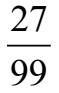
，化简为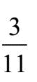
。通过用分数表示0.123123123123检验你自己的理解。
明白了吧！我们不必为“序列”和“极限”而感到烦恼。但是，如果你粗心大意地随便抛出无限的序列会发生什么？思考这个和：
Z=1+2+4+8+16+32+… (E)
乘以2：
2Ｚ=2+4+8+16+32+…(F)
并用（E）减去（F）
Z=1+2+4+8+16+32+…
2Ｚ= 2+4+8+16+32+…
⇒ –Ｚ=1，
这意味着Ｚ=–1。这当然是无稽之谈。
是什么地方出了错？我们粗心大意了。当我们将对0.999999…和0.272727…做出的正确分析应用到1+2+4+8+16+…时失败了。在所有这三种情况下，符号代表了无穷多项的总和。第一个可以这样写：
0.9+0.09+0.009+0.0009+…
这与1+2+4+8+16+…有何不同？不同之处在于收敛性（convergence）。因此如果不仔细理解收敛性，我们可能会认为无限多的正数之和是负数！我们在等式（A）和（B）[以及（C）和（D）]中所进行的处理在数学上是有效的，因为序列是收敛的。
上一个问题的答案：令x=0.123123123…，然后1000x =
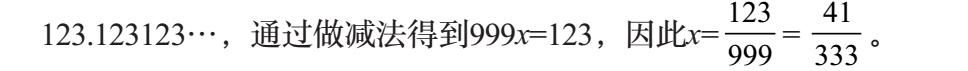